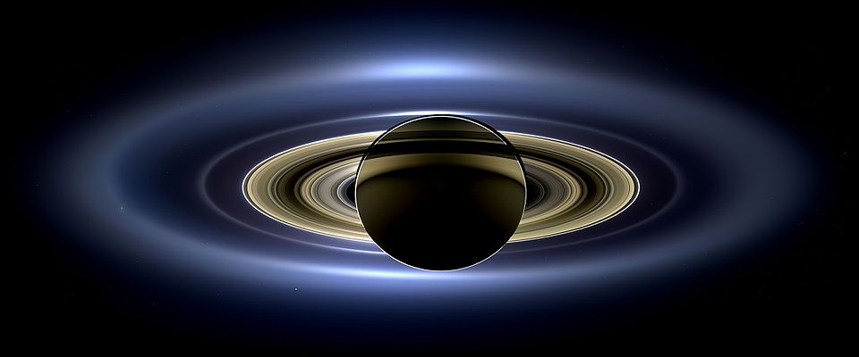

The Ringed Planet
Saturn is famous for its beautiful rings made of ice and rock.
It has more than 80 moons, including Titan, which has a thick atmosphere. Saturn is famous for its beautiful rings made of ice and rocks.Saturn is the sixth planet from the sun, because of it's old icy rings you cannot stand on it. And there is also another reason why you can't stand on Saturn, it's because the rings aren't solid. It's super windy and cool on Saturn. And another cool fact is that Saturn has a bigger moon than Mercury! It also has more moons than any other planet in the Solar System.
